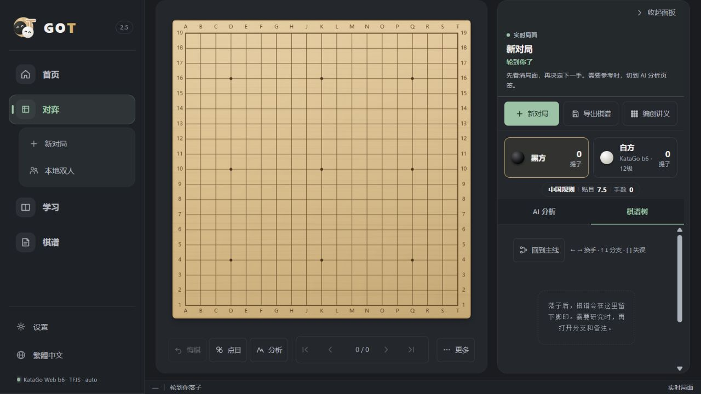

使用指南
按你要做的事选择入口，先从一盘棋或一道题开始。
当前页面和完整指南提供简体中文；其他语言版本尚未完成。

快速开始
- 开始对弈：进入“对弈 → 新对局”，选择棋盘大小与对手，然后点击交叉点落子。
- 学规则和做题：进入“学习”看新手教程；打开“死活题”练习局部计算。
- 回看棋局：从“棋谱”打开记录，逐手浏览并选择 AI 分析或 AI 复盘。
- 使用 AI 老师：先在“设置 → 引擎”配置服务与模型，再开始课程或指导棋。19 路指导棋的行棋需要 KataGo 就绪；回答后可以继续提问。
- 个性化与棋盘外观：在“设置 → 个性化”分别选择对弈和复盘面板显示哪些信息；棋局与棋谱位置会保留。进入 AI 老师课堂时，桌面会自动收起侧栏并调整棋盘与讲解区布局，结束后恢复。在“设置 → 棋盘与显示”调整 2D/3D 棋盘，或恢复棋盘默认外观。对弈页“更多 → 导出棋盘 PNG”可保存纯棋盘高清图。需要更强的本地分析时，可查看 GitHub 本机版说明。
棋盘下方的“形势”和“点目”会在同一操作栏显示结果，不另占一行缩小棋盘。形势只展示估算；点目还可标记死子并确认或取消。